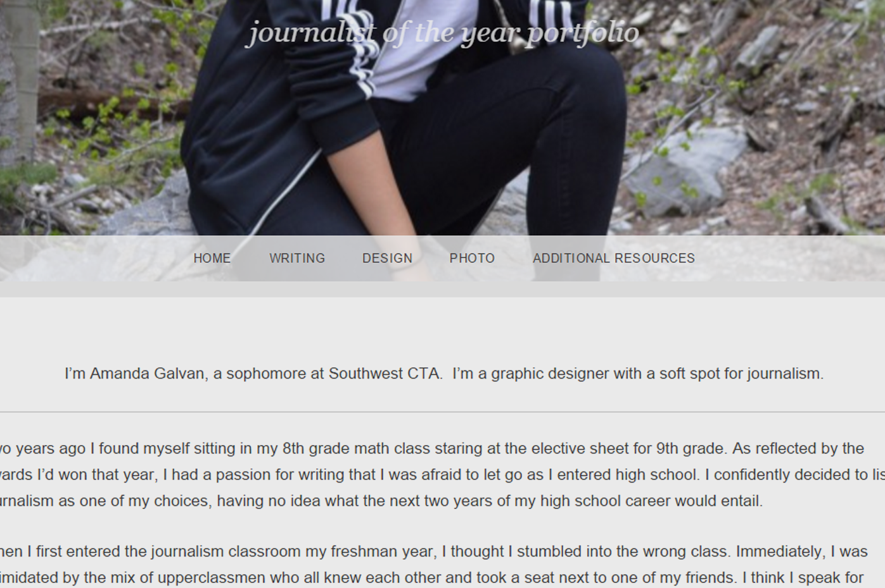
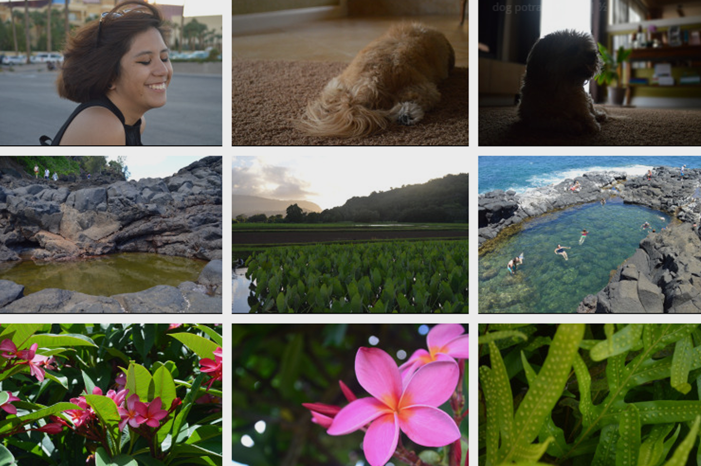

The following items are links to more specific portfolios containing different types of work. Click on the photo to view.

Portfolio

Journalist of the Year Portfolio
June 2015
Tenets: Writing Skills, Professional Communication, Content Knowledge
This portfolio was created for my Journalism II final exam. It contains photos and spreads that follow the journalism standards, as well as links to articles I've written and an in-depth self-reflection essay.

Photography Portfolio
December 2014
Tenets: Professional Communication, Use of Resources
This portfolio contains multiple examples of my photography. It's a personal collection of my own artistic work, and provides different examples than the journalism photography does.
Back to top